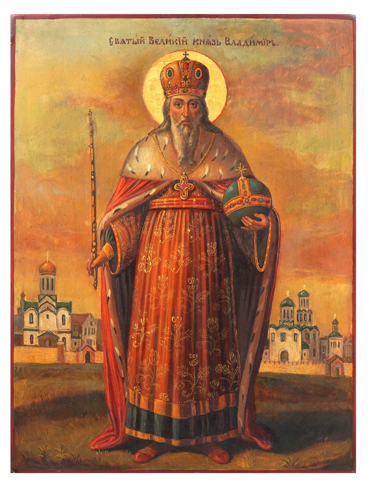
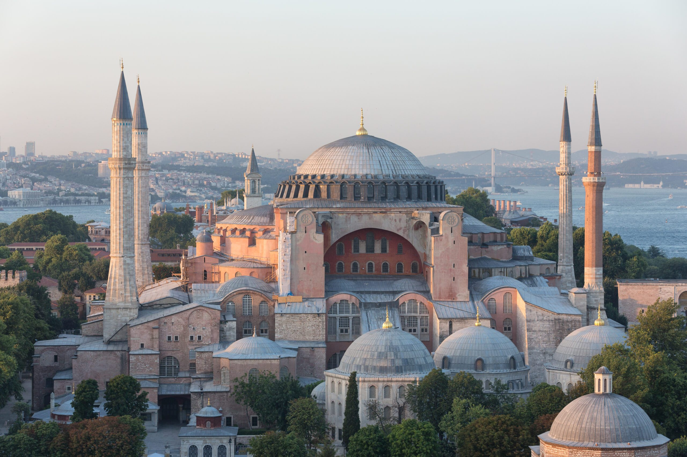

Where It All Began
Orthodox Christianity doesn't see itself as a denomination that branched off from something else. It sees itself as the original church, the one founded directly by Jesus Christ and carried forward by his Apostles. And honestly, when you look at the timeline, that claim holds up better than a lot of people expect.
After the Resurrection and the descent of the Holy Spirit at Pentecost, the Apostles spread out across the known world. Peter went to Rome. Andrew went to what is now Greece and Russia. Thomas went all the way to India. Mark founded the church in Alexandria, Egypt. They didn't leave behind a written manual. They left behind living communities, with priests, bishops, sacraments, and a form of worship that was passed on person to person, generation to generation.
This is actually a really important point that I didn't understand until I started looking into Orthodoxy. Before the New Testament was even compiled into a single book (which didn't happen until the late 4th century), Christianity was already thriving across the Roman Empire and beyond. What held it together wasn't a book. It was Holy Tradition: the prayers, the liturgy, the sacraments, the teachings of the Church Fathers passed down from the Apostles themselves.
On Scripture and Tradition
Protestant Christianity tends to place sola scriptura, Scripture alone, as the foundation of the faith. But Orthodox Christians point out something worth thinking about: the Bible as we know it was put together by the Church, at councils in the 4th and 5th centuries. Christianity existed and flourished for centuries before that process was complete. So Tradition isn't a human addition to Scripture. Tradition is what produced Scripture in the first place.
The Early Church Fathers
The Church Fathers were the theologians, bishops, and teachers of the first several centuries who defined Christian doctrine. Names like Saint Ignatius of Antioch, Saint Irenaeus of Lyon, Saint Basil the Great, Saint John Chrysostom, and Saint Athanasius of Alexandria. These are not obscure figures. They were bishops of major cities, brilliant writers, and in many cases martyrs. Their writings form a huge part of what Orthodox theology is built on.
What's remarkable is how consistent their teaching is. You can read Ignatius of Antioch writing in around 107 AD and recognize the same sacramental, liturgical, hierarchical church that exists in an Orthodox parish today. That continuity is genuinely striking.
The Ecumenical Councils, seven of them held between 325 AD and 787 AD, defined the core doctrines of Christianity: the Trinity, the two natures of Christ, the veneration of icons. These weren't just debates among theologians. They were massive church-wide gatherings where the Holy Spirit, Orthodox Christians believe, guided the Church into truth. And those doctrinal definitions haven't changed in Orthodoxy since.
Vladimir the Great and the Baptism of Russia
This is one of my favourite stories in all of Christian history. It's the year 987 AD, and Prince Vladimir I of Kiev is faced with a decision. His realm, Kievan Rus, the ancestor of modern Russia, Ukraine, and Belarus, is pagan. He's a pagan himself, with multiple wives and a legendary reputation for violence. But something is shifting. He decides to investigate the major world religions to find the truth.
He sends out his wisest emissaries, essentially ambassadors of inquiry, to every corner of the known world. They go to the Bulgarians and observe Islam. They travel to Germany and Rome to witness Latin Christianity. They visit Jewish communities. Each time, they come back with reports: interesting, but something feels missing. Something isn't quite right.
Then they go to Constantinople, modern-day Istanbul in Turkey, and they walk into the Hagia Sophia during the Divine Liturgy.
"We knew not whether we were in heaven or on earth. For on earth there is no such splendour or such beauty, and we are at a loss how to describe it. We know only that God dwells there among men, and their service is fairer than the ceremonies of other nations. For we cannot forget that beauty."
— Account of Vladimir's emissaries, as recorded in the Primary Chronicle
They literally couldn't tell if they were in heaven or not. Vladimir was baptized in 988 AD and began the Christianization of Kievan Rus. He was later canonized as Saint Vladimir Equal-to-the-Apostles. His grandmother Olga, who had converted earlier, is also a saint. The entire trajectory of Russian and Eastern European civilization flows from that one moment in the Hagia Sophia.
I think about this story all the time when I'm researching Orthodox churches. The beauty wasn't incidental to the conversion. The beauty was the testimony. That's why these buildings are built the way they are.
The Hagia Sophia
The church that changed history. Built in Constantinople (Istanbul, Turkey) between 532 and 537 AD under Emperor Justinian I, the Hagia Sophia, which means Holy Wisdom, is considered one of the greatest architectural achievements in human history.
For nearly a thousand years it was the largest church in the world. Its dome, 31 metres in diameter and sitting 55 metres above the floor, was an engineering miracle that had not been attempted before and would not be surpassed for centuries. When you stand inside it, the dome appears to float, lit by a ring of windows that make it seem like it's hovering on light.
It was the seat of the Patriarch of Constantinople, the most important bishop in Eastern Christianity. It was here that the great liturgical tradition was performed in its fullest form: gold mosaics, choirs, incense, the whole overwhelming experience that brought Vladimir's emissaries to their knees.
In 1453 AD, Constantinople fell to the Ottoman Turks, and the Hagia Sophia was converted into a mosque. In 1934 it was secularized and became a museum. In 2020 it was reconverted to a mosque by the Turkish government, which caused significant pain across the Orthodox world. For Orthodox Christians, it remains the symbol of the ancient Christian civilization of Byzantium, a constant reminder of what was and what endures in the tradition despite everything.
The Divine Liturgy and the Five Senses
The Divine Liturgy of Saint John Chrysostom is the primary worship service of the Orthodox Church. It has been celebrated in essentially the same form for over 1,600 years. When you attend a liturgy in a Greek Orthodox church in Vancouver, a Russian Orthodox church in Moscow, and an Antiochian church in New York, you're participating in the same service. The language changes, the choir style changes, but the structure, the prayers, the readings, the Eucharist, remains identical.
One of the things that first drew me to Orthodoxy was learning how the liturgy deliberately engages all five senses. It's not accidental. The entire sensory experience of an Orthodox church is designed to draw the whole person, body and soul, into worship.
Sight
Gold leaf icons, frescoes covering every wall, candlelight, the priest's vestments, the jewelled Gospel book. Everywhere you look, there is intentional beauty pointing toward the divine.
Smell
Frankincense and myrrh burned in a censer swung by the deacon throughout the service. The smell of holy oil and beeswax candles. The scent of an Orthodox church is genuinely unlike anything else.
Touch
Venerating the icons by kissing them. Prostrations, full bows touching the floor. Receiving the Eucharist. The physical, bodily participation in worship is considered essential, not optional.
Hearing
All of the liturgy is sung. No musical instruments, only the human voice. In Orthodoxy the human voice is considered the most perfect instrument. The ancient chants are haunting and beautiful. Some traditions say the angels in heaven sing without stopping.
Taste
The Eucharist, leavened bread and wine, believed to be the actual Body and Blood of Christ. The antidoron (blessed bread) distributed at the end of the liturgy. Tasting holiness is meant quite literally.
This multisensory approach to worship is also why Orthodox church buildings are built the way they are. The architecture isn't just decoration. It is part of the liturgy. The dome represents heaven. The nave represents the earth. The iconostasis, the screen of icons separating the nave from the altar, represents the boundary between the visible and invisible worlds. When you're standing in an Orthodox church during liturgy, you're meant to feel like you're standing at the intersection of heaven and earth.
The Great Schism of 1054
For the first thousand years of Christianity, the church was one. There were tensions, disputes, and regional differences, but there was a single Christian church with patriarchs in Rome, Constantinople, Alexandria, Antioch, and Jerusalem. They were in communion with each other.
In 1054 AD, things finally broke. The Great Schism divided the church into what we now call Roman Catholicism (the Western church) and Eastern Orthodoxy (the Eastern church). The immediate trigger was a dispute over papal authority, specifically whether the Bishop of Rome had supreme jurisdiction over the entire church, or whether he was simply the first among equals, as Eastern bishops maintained.
There were also theological disagreements that had been building for centuries. The most significant was the filioque controversy: whether the Holy Spirit proceeds from the Father alone (the Eastern position) or from the Father and the Son (the Western position, which Rome had added to the Nicene Creed without a council). Adding anything to the Creed without an Ecumenical Council was, for Orthodox Christians, a serious breach of authority.
The result was that the Pope of Rome and the Patriarch of Constantinople excommunicated each other (those excommunications were lifted in 1964 by Pope Paul VI and Patriarch Athenagoras, though the churches remain separated). The Western church went on to develop scholastic theology, the Reformation, Protestantism, and all the subsequent branches of Western Christianity. The Eastern church kept what it had always had, and kept it unchanged.
Orthodox vs. Catholic vs. Protestant
A rough way to think about it: Catholicism and Orthodoxy separated in 1054. Protestantism broke from Catholicism in the 16th century during the Reformation. Orthodox Christianity never went through either the Medieval period of Western Christianity or the Reformation, which is part of why it feels so different from both. It's been doing the same thing, more or less, since the 4th century.
Orthodox Timeline
Here's a visual overview of the major moments in Orthodox Christian history, from Pentecost to the present day.
Orthodox Christianity: a timeline of 2,000 years of unbroken tradition.
Key Dates at a Glance
| Year | Event | Significance |
|---|---|---|
| 33 AD | Pentecost | The Church is founded by the descent of the Holy Spirit on the Apostles in Jerusalem. |
| 325 AD | First Council of Nicaea | The Nicene Creed is formulated. The doctrine of the Trinity is defined against Arianism. |
| 381 AD | First Council of Constantinople | The Creed is completed. The divinity of the Holy Spirit is affirmed. |
| 537 AD | Hagia Sophia completed | Emperor Justinian's great cathedral is consecrated in Constantinople. |
| 787 AD | Seventh Ecumenical Council | Veneration of icons is restored and theologically defined after the Iconoclast controversy. |
| 988 AD | Baptism of Kievan Rus | Prince Vladimir converts and Orthodoxy spreads throughout Russia and Eastern Europe. |
| 1054 AD | The Great Schism | East and West separate. Eastern Orthodoxy and Roman Catholicism become distinct churches. |
| 1453 AD | Fall of Constantinople | The Byzantine Empire ends. The Hagia Sophia becomes a mosque. Moscow becomes the "Third Rome." |
| 1917 to 1991 | Soviet persecution | Tens of thousands of Orthodox churches are closed, demolished, or repurposed. Clergy and faithful are killed or imprisoned. |
| 1991–present | Orthodox revival | After the fall of the Soviet Union, churches are restored and rebuilt across Russia, Ukraine, and Eastern Europe. |
Want to go deeper? The Journal page has articles on Orthodox spiritual literature, and the About page has my personal story of how I found all of this.